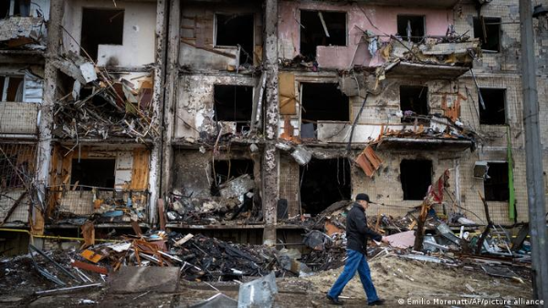
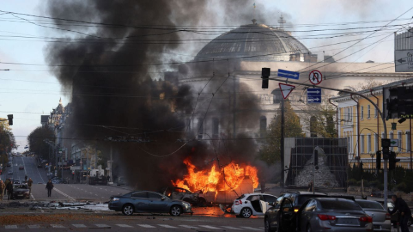
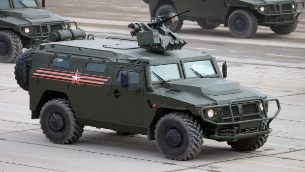
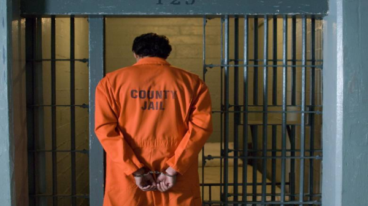
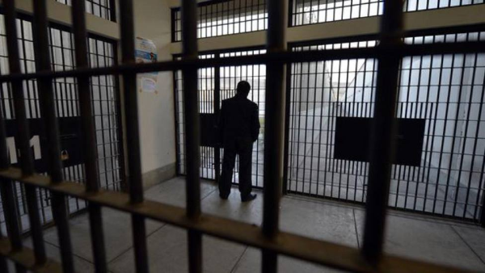
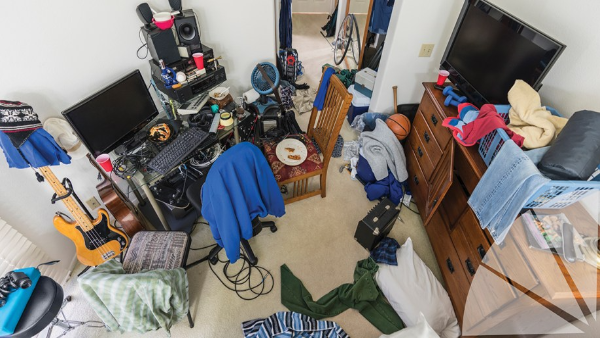
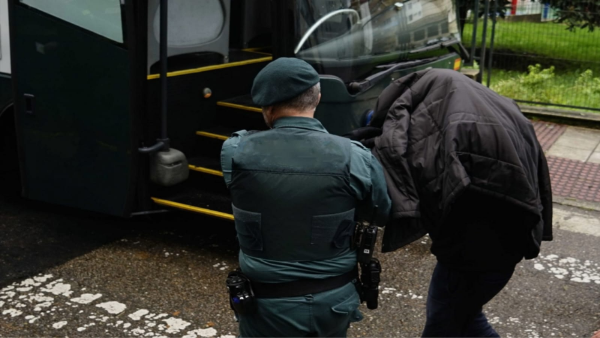

Código del Caos
Nikolai un hacker ruso se muda a Ucrania, en donde la situación bélica está en pleno desarrollo, tras las impactantes imágenes de Kiev y con el apoyo de su nuevo compañero intentará ganar la guerra cibernética que pronto declarará.
Capítulos:

Llegando a destino
Llegando a destino
Nikolai decide mudarse a Ucrania debido a las recientes revueltas en las calles y tras no ser aceptado en la universidad de su país, pero tan pronto llega se da cuenta de todo lo que éste oculta.
Compañeros
Nikolai descubre que su país miente sobre todo lo que está pasando en la guerra con Ucrania. Nikolai se hace amigo de Anwir que comparte el mismo hobby que él.

Conflito inminente
Conflito inminente
Los dos amigos deciden declarar la guerra cibernética a Rusia con el objetivo de frenar los bombardeos en Kiev, pero un pequeño descuido causará revuelto en el país ruso.
Errores por todas partes
La policía cibernética rusa detecta una alteración en sus sistemas, la dirección de Anwir queda completamente vulnerable a cualquier ataque.

Tiempo contado
Tiempo contado
Una escuadra militar está en camino, Nikolai intenta distraerlos dejando pistas de una ubicación falsa, pero poco sirve.

La perdida
La perdida
Anwir es encarcelado y sentenciado. Nikolai sale a caminar tras el impacto de la noticia, la gente le ruega por comida debido a la cantidad de muertes por inanición.
Una nueva esperanza
Nikolai está decidido a ganar la guerra y recuperar a su compañero. Tras un ataque rutinario a los sistemas rusos, logra llegar a donde está su amigo.

Ya no está
Ya no está
Las distracciones funcionan. Nikolai se dirige a las cárceles para rescatar a su amigo, pero las encuentra vacías.

Algo no está bien
Algo no está bien
Nikolai vuelve a la casa que compartían con Anwir y la encuentra desordenada. Las cámaras muestran militares entrando en el hogar, encabezados por alguien, a quien Nikolai le resulta familiar.
Poco tiempo disponible
Nikolai descubre quien le resultaba conocido, tiene que huir. Mientras se dispone a agarrar la cosas necesarias cuando escucha la cerradura abrirse.

La Traición